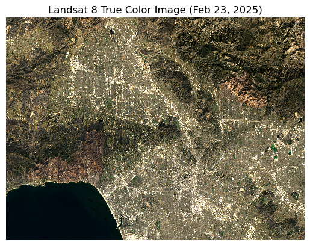
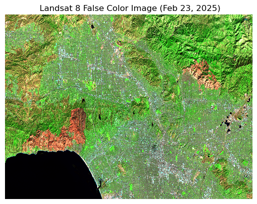
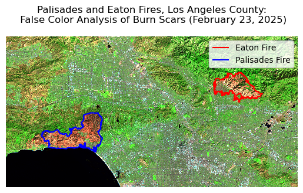
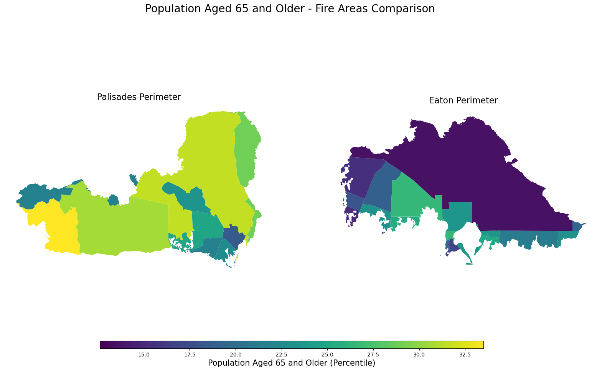

Exploring the effect of the Eaton and Palisades Fires on Elderly residents in Los Angeles County in 2025.
Geospatial
Python
Author
Hylaea Miller
Published
December 1, 2025
About
The Palisades and Eaton fires started in Los Angeles County on Jan 7, 2025, burning more than 16,000 structures, forcing mass evacuations, and resulting in at least 28 fatalities (SHANE, 2025). Understanding the social dimensions of wildfire impacts is crucial for effective disaster response and recovery.
This blog post analyzes the 2025 Eaton and Palisades Fires in Los Angeles County using Landsat 8 satellite imagery to create false-color composites that highlight burned areas and vegetation damage, and includes an analysis of the social impact on elderly residents using the Environmental Justice Index (EJI) dataset.
The complete code and analysis for this project can be found here: GitHub repository
Highlights
Data wrangling and exploration using pandas and numpy
Geospatial analysis of false and true color images with geopandas and rioxarray
Creating visualizations with matplotlib to analyze the spatial distribution of elderly populations in areas affected by the Eaton and Palisades fires
Data Information
Landsat Collection of bands
Contains a simplified collection of bands (red, green, blue, near-infrared, and shortwave infrared) from the Landsat Collection 2 Level-2 atmospherically corrected surface reflectance data, collected by the Landsat 8 satellite. Download here: Landsat Collection
Palisades and Eaton Dissolved Fire Perimeters
Contains dissolved fire perimeters/boundaries for the Eaton and Palisades fires. Download here: Fire Perimeters
Environmental Justice Index (EJI) data
Contains 2024 census tract-level data on environmental and socioeconomic factors for California, including the percentage of elderly residents (age 65 and older) used in this analysis. Download here: EJI
Setup: Import Libraries and Data
Load the necessary packages, and import Landsat bands, fire perimeters, and EJI data.
Code
# Loading necessary librariesimport os import numpy as npimport pandas as pdimport matplotlib.pyplot as pltimport xarray as xr import geopandas as gpdimport contextily as ctx# Load Landsat data from NetCDF filelandsat = xr.open_dataset("data/landsat8-2025-02-23-palisades-eaton.nc")# Load Eaton perimeter shapefilefp = os.path.join('data', 'Eaton_Perimeter_20250121.shp')eaton = gpd.read_file(fp)# Load Palisades perimeter shapefilesfp = os.path.join('data', 'Palisades_Perimeter_20250121.shp')palisades = gpd.read_file(fp)# Load EJIfp = os.path.join('data', 'EJI_2024_California.gdb')eji = gpd.read_file(fp)
Prepare Landsat Data
This dataset does not currently have a CRS assigned, indicating it is not a geospatial object. To restore the geospatial information, we will use the rio.write_crs() function to assign the correct CRS to the dataset. The appropriate CRS for Landsat 8 data is EPSG:32611 (WGS 84 / UTM zone 11N), retrieved from the spatial_ref metadata attribute.
Code
# Write the correct CRSlandsat.rio.write_crs("WGS 84 / UTM zone 11N", inplace=True)
It is important to check and handle any missing values (NaNs) in the data before creating the composite image. Missing values can lead to inaccuracies in the visualization and analysis, and in this case will give us warning messages when plotting the data.
Code
# Check for missing data in red, green, and blue bandsprint(np.isnan(landsat[["red", "green","blue"]]).sum())# Fill NaN values with 0landsat = landsat.fillna(0)
True Color Composite
Before analyzing the fire impact, we will create a true color composite image using the red, green, and blue bands from the Landsat dataset. This composite will provide a visual representation of true colors as seen by the human eye of the area affected by the Eaton and Palisades fires.
Code
# Create a true color image with robust scalinglandsat[['red', 'green', 'blue']].to_array().plot.imshow(robust=True)plt.title('Landsat 8 True Color Image (Feb 23, 2025)')plt.axis('off')plt.show()

The robust=True parameter adjusts the color scaling, preventing outliers from dominating and allowing the image to display correctly, while filling NaN values with zero prevents gaps in the data and warning messages.
False Color Composite
False color composites are useful for highlighting specific features in satellite imagery that may not be as easily discernible in true color images.
We are creating a false color image by assigning the short-wave infrared (swir22), near-infrared, and red bands to the red, green, and blue channels, respectively.
Code
# Plot a false color image using SWIR, NIR, and Red bandslandsat[['swir22', 'nir08', 'red']].to_array().fillna(0).plot.imshow(robust =True)plt.title(' Landsat 8 False Color Image (Feb 23, 2025)')plt.axis('off')

Visualize false color image with fire perimeters
To visualize the impact of the Eaton and Palisades fires, we will overlay the fire perimeters on top of the false color composite image. This will require reprojecting the fire perimeter data to match the CRS of the Landsat data.
Code
# Reproject the fire extends to the landsat dataseteaton = eaton.to_crs(landsat.rio.crs)palisades = palisades.to_crs(landsat.rio.crs)
Code
# Plot false color image with fire perimetersfig, ax = plt.subplots()landsat[['swir22', 'nir08', 'red']].to_array().fillna(0).plot.imshow(ax=ax, robust=True)eaton.boundary.plot(ax=ax, edgecolor='red', label='Eaton Fire')palisades.boundary.plot(ax=ax, edgecolor='blue', label='Palisades Fire')ax.set_title('Palisades and Eaton Fires, Los Angeles County:\n False Color Analysis of Burn Scars (February 23, 2025)')ax.legend()ax.axis('off')plt.show()

Figure Interpretation
This figure displays a false color composite image of the Los Angeles County fires using SWIR, NIR, and red bands assigned to RGB channels, respectively, to highlight the burned areas from the Palisades and Eaton fires. The imagery was acquired by Landsat 8 on February 23, 2025.
Healthy vegetation appears in shades of bright green due to high reflectance in the near-infrared band, while burned areas are shown in shades of brown and magenta, indicating low reflectance in both the shortwave infrared and near-infrared bands. Fire perimeters are overlaid on the image, with the Palisades Fire outlined in blue and the Eaton Fire outlined in red, allowing for easy identification of the affected areas.
Prepare EJI Data
The EJI dataset contains various socioeconomic and environmental variables at the census tract level. For this analysis, we will focus on the percentage of elderly residents (age 65 and older). We will reproject the EJI data to match the CRS of the Landsat data for accurate spatial analysis, and clip the EJI data to the extent of the fire perimeters to focus on the areas affected by the fires.
Match the CRS of the EJI data to that of the Landsat data using the .to_crs() method.
Code
# Match the CRS of the eji data to the fire perimetereji = eji.to_crs(palisades.crs)
Clip the EJI data to the extent of the fire perimeters using the .clip() method.
Code
# Clip the census tracts to the Palisades fire perimeter using geopandas.clip()eji_pali = gpd.clip(eji, palisades)# Clip the census tracts to the Eaton fire perimeter using geopandas.clip()eji_eaton = gpd.clip(eji, eaton)
Visualize EJI data
Code
# Create blank figure with two subplots side by sidefig, (ax1, ax2) = plt.subplots(1, 2, figsize=(20, 10))# Specify the EJI variable to ploteji_variable ='E_AGE65'# Find common min/max for legend rangevmin =min(eji_pali[eji_variable].min(), eji_eaton[eji_variable].min())vmax =max(eji_pali[eji_variable].max(), eji_eaton[eji_variable].max())# Plot census tracts within Palisades perimetereji_pali.plot( column= eji_variable, vmin=vmin, vmax=vmax, legend=False, ax=ax1,)ax1.set_title('Palisades Perimeter', fontsize=16)ax1.axis('off')# Plot census tracts within Eaton perimetereji_eaton.plot( column=eji_variable, vmin=vmin, vmax=vmax, legend=False, ax=ax2,)ax2.set_title('Eaton Perimeter', fontsize=16)ax2.axis('off')# Add overall titlefig.suptitle('Population Aged 65 and Older - Fire Areas Comparison ', fontsize=20)# Add shared colorbar at the bottomsm = plt.cm.ScalarMappable( norm=plt.Normalize(vmin=vmin, vmax=vmax))cbar_ax = fig.add_axes([0.25, 0.08, 0.5, 0.02]) # [left, bottom, width, height]cbar = fig.colorbar(sm, cax=cbar_ax, orientation='horizontal')cbar.set_label('Population Aged 65 and Older (Percentile)', fontsize=15)plt.show()

Figure Interpretation
The variable Population Aged 65 and Older (E_AGE65) shows a different distribution across the two fire perimeters. In the Palisades fire perimeter, there is a higher concentration of census tracts with elevated percentiles of elderly residents compared to the Eaton fire perimeter. This suggests that the Palisades area have a larger proportion of older adults who could face greater challenges during wildfire events, such as mobility issues and health vulnerabilities. Consequently, wildfire relief efforts in the Palisades area may need to prioritize resources for evacuation assistance, medical support, and community outreach tailored to the needs of elderly residents. In contrast, the Eaton fire perimeter may require different strategies focused on other demographic factors present in that area.
References:
Microsoft Planetary Computer. (2025). Landsat Collection 2 Level-2. https://planetarycomputer.microsoft.com/dataset/landsat-c2-l2. [Accessed: November 19, 2025]
National Interagency Fire Center (NIFC). (2025). Palisades and Eaton Fire Perimeters [Dataset]. Los Angeles GeoHub. https://geohub.lacity.org/maps/ad51845ea5fb4eb483bc2a7c38b2370c/about [Accessed: November 19, 2025]
NASA Earth Observatory. (2014, March 14). Why is that Forest Red and that Cloud Blue? How to Interpret a False-Color Satellite Image. NASA Science. https://science.nasa.gov/earth/earth-observatory/how-to-interpret-a-false-color-satellite-image/ [Accessed: November 20, 2025]
Philips, Shane (2025, November 17). The Palisades and Eaton Fires: Neighborhood Data and Potential Housing Market Effects. UCLA Lewis Center for Regional Policy Studies. https://www.lewis.ucla.edu/research/the-palisades-and-eaton-fires-neighborhood-data-and-potential-housing-market-effects/[Accessed: November 30, 2025]